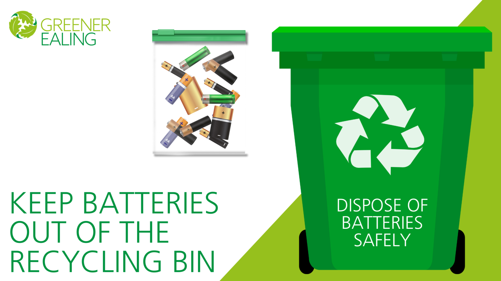
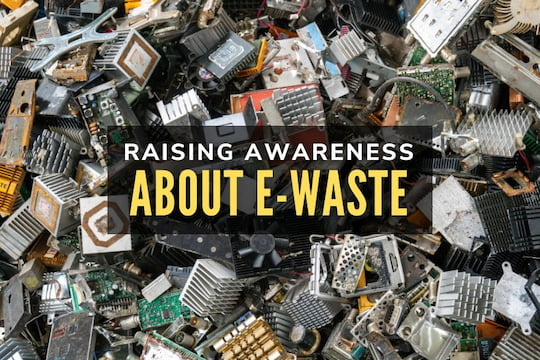
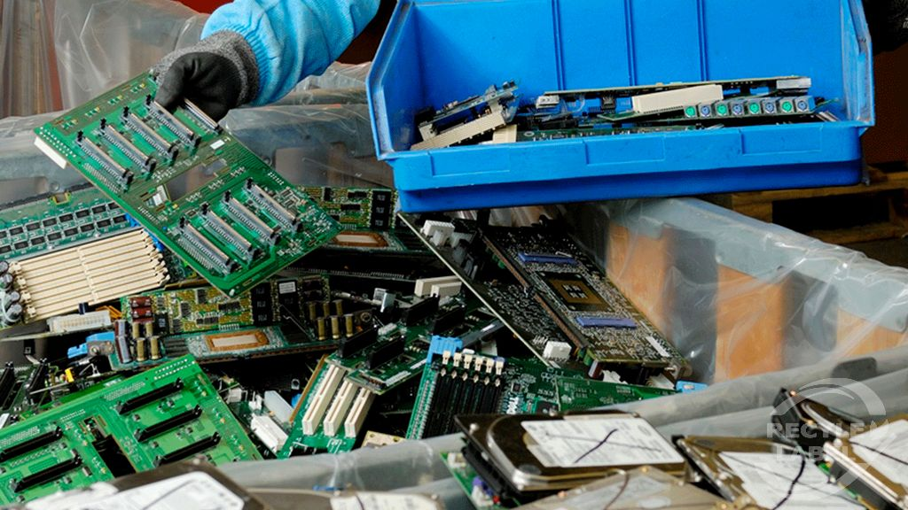
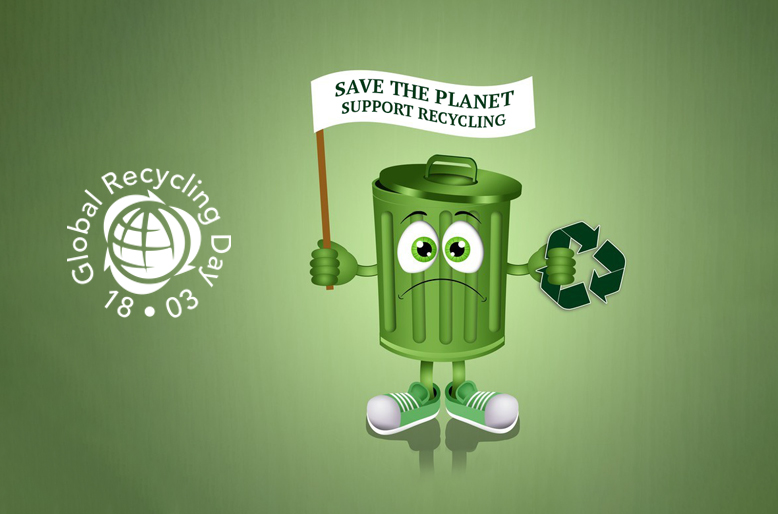

Simple actions to reduce e-waste and support the circular economy
Reducing e-waste and building a circular economy is possible if we all do our part. Here are some practical ways you can help, at home, at school, or in your community.
Start NowChoose electronics that are durable, repairable, and energy efficient. Avoid buying new devices unless you really need them.
Use protective cases, keep devices clean, and update software to extend their life. Repair instead of replacing when possible.

Never throw electronics in the trash. Bring them to certified e-waste collection points or recycling centers.

Organize information campaigns, workshops, or collection drives at school or in your neighborhood to teach others about e-waste.
Take part in or organize repair cafés and workshops where people can learn to fix their electronics instead of throwing them away.
Give working devices a second life by donating them to others or sharing them through community programs.
Companies can design products that are easier to repair and recycle. Governments can support these efforts with laws and incentives.

Businesses can offer take-back or recycling programs for old electronics, making it easier for people to dispose of devices responsibly.

Governments and companies can invest in better recycling infrastructure and support research into new recycling technologies.